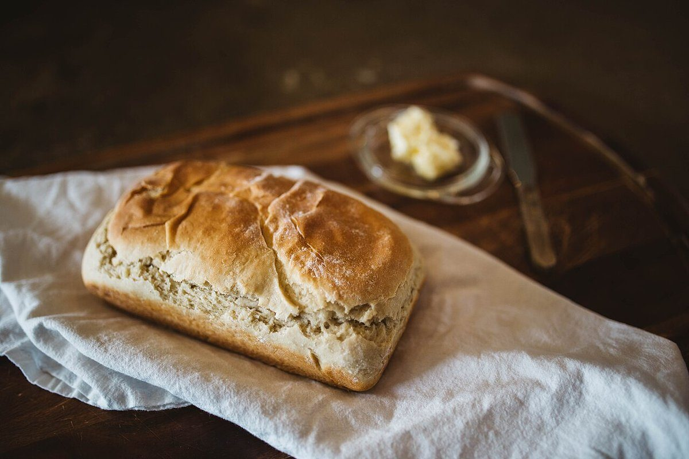

No.2 品目
品目
パンの種類・価格・焼き上がりの時間は準備中です。以下は空欄の伝票で、お店の実際の品ぞろえではありません。
白品名・数量・金額
| # | 品名 | 数量 | 金額 |
|---|---|---|---|
| 01 | 準備中 | 準備中 | 準備中 |
| 02 | 準備中 | 準備中 | 準備中 |
| 03 | 準備中 | 準備中 | 準備中 |
| 04 | 準備中 | 準備中 | 準備中 |
| 05 | 準備中 | 準備中 | 準備中 |
| 06 | 準備中 | 準備中 | 準備中 |
品名や金額は、お店のご確認をいただいてから記入します。
青写真(イメージ)
以下は一般的なパンづくりの様子をあらわしたフリー素材です。お店で扱うパンや作り方とは関係ありません。


黄備考


ご予約・お取り置き・テイクアウトなどのご案内: 準備中